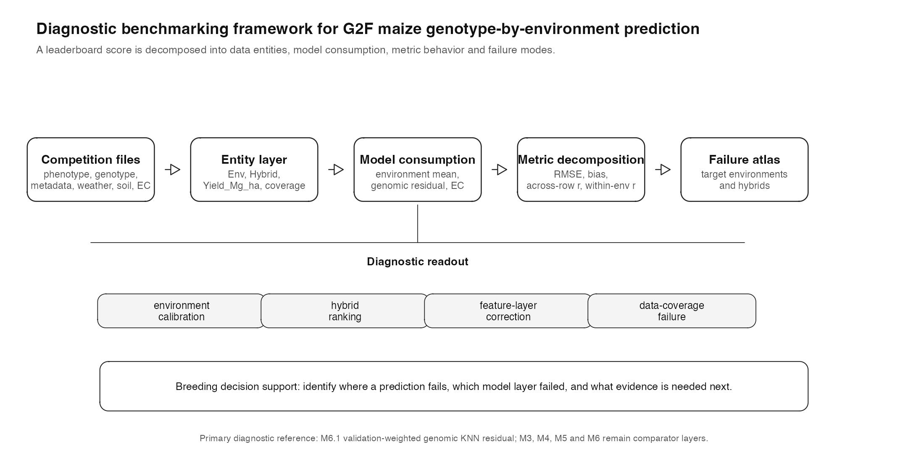
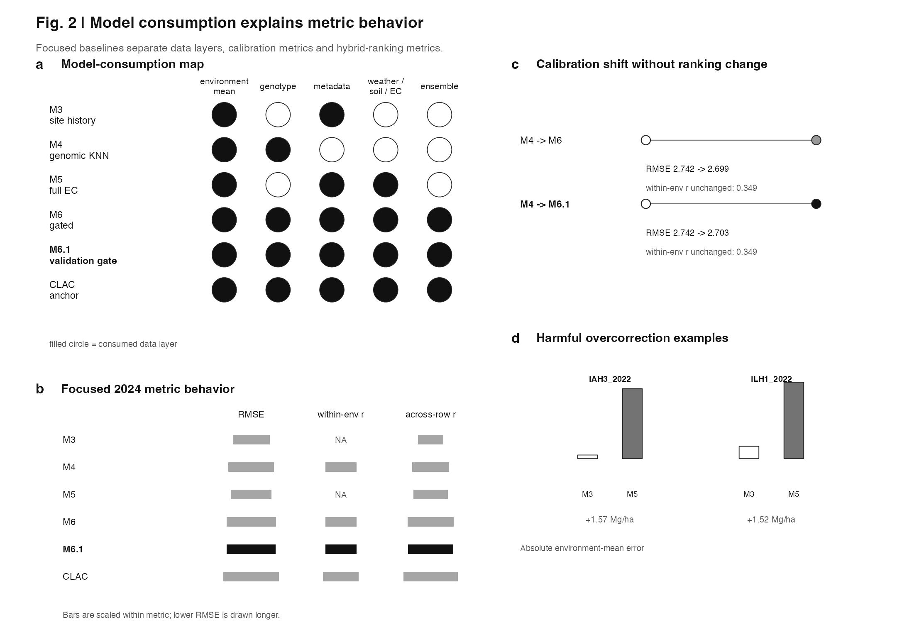
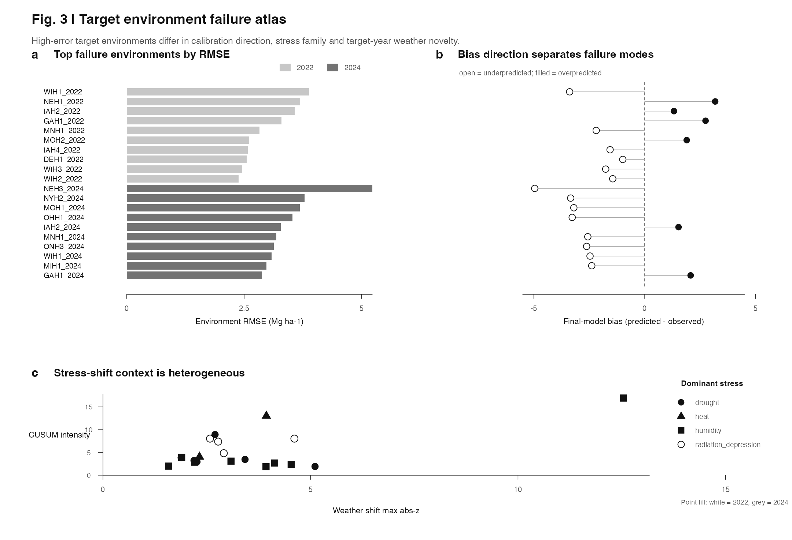
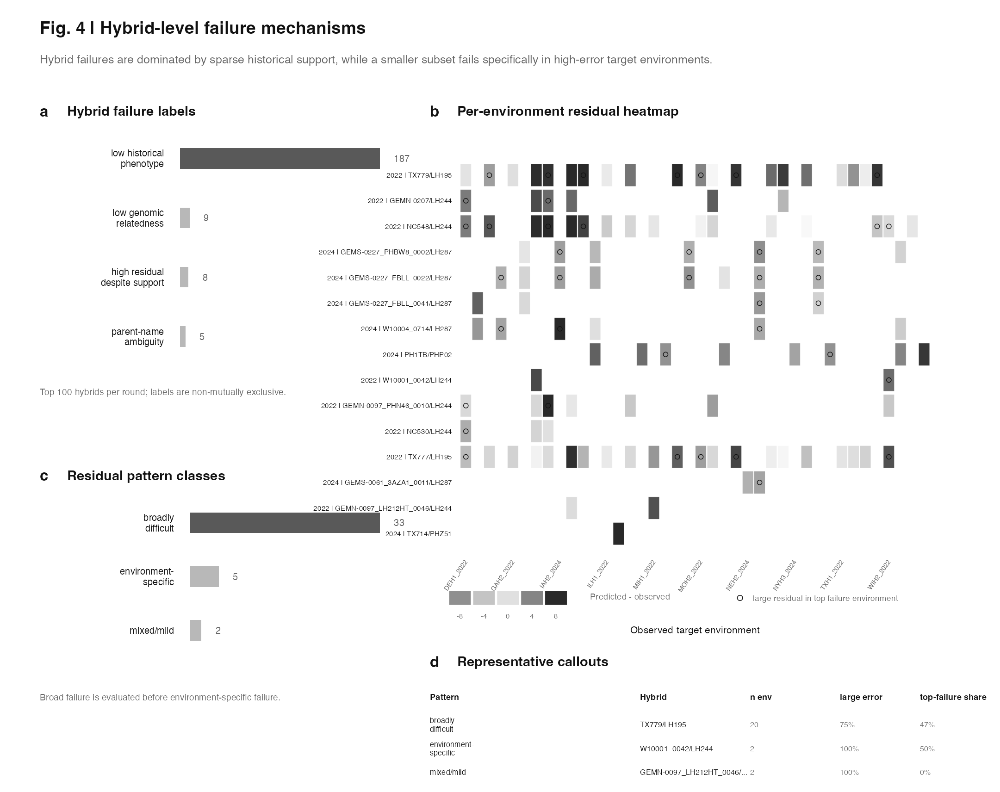
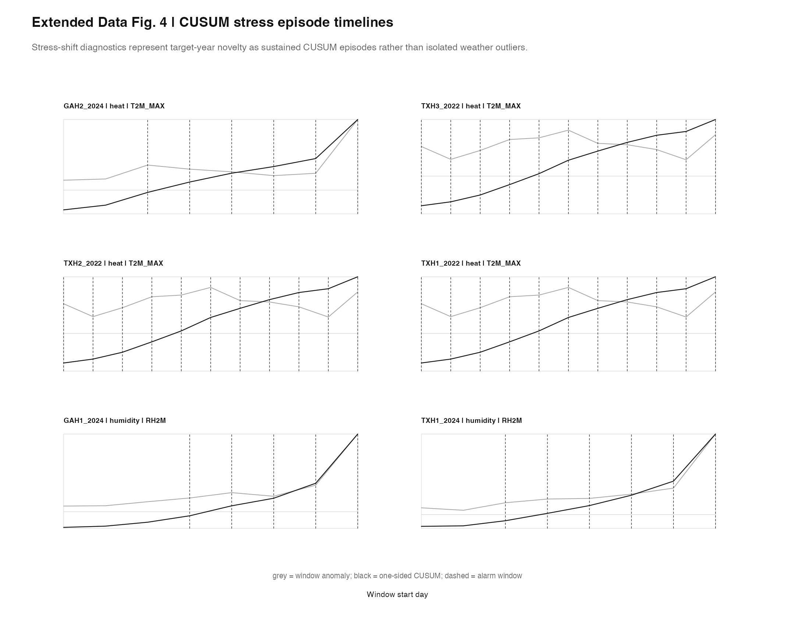

Data preprocessing
Build a clean working layer from raw G2F competition files while preserving official `Env`, `Hybrid` and `Yield_Mg_ha` identifiers.
Genomes to Fields maize GxE prediction
This project is for people who care about robust GxE prediction, model diagnostics and breeding decision support. It turns public G2F maize competition data into an end-to-end computational workflow for asking why models succeed or fail across environments and hybrids.

The project follows an end-to-end analytical workflow: data preprocessing, diagnostic baseline modeling, environment stratification, error-shift analysis, failure-mode mapping and interactive visualization.
Build a clean working layer from raw G2F competition files while preserving official `Env`, `Hybrid` and `Yield_Mg_ha` identifiers.
Train reproducible baselines that separate target-environment mean calibration from hybrid residual prediction.
Describe target environments by site-history support, weather novelty and CUSUM stress episodes.
Compare when environmental covariate corrections improve calibration and when they cause harmful overcorrection.
Link prediction errors to environment calibration, hybrid phenotype support, genomic relatedness and parent-name ambiguity.
Convert model outputs into visual reports, target-environment atlases and decision-support views.
The project is organized around findings, not model names. Each finding links to the visual evidence used to diagnose the behavior.
Historical site information explained much of the absolute yield level, making environment calibration a first-order source of RMSE and bias behavior.
View environment mean reportM5 corrections improved some target environments, especially in 2024, but also produced harmful overcorrection when M3 was already well calibrated.
View M5 covariate reportM6 and M6.1 shifted target environment means while preserving within-environment ranking, separating calibration gains from hybrid-ranking gains.
View validation gate diagnosticsTop residuals separate into target-environment calibration errors, stress-associated contexts, sparse phenotype support, low genomic relatedness and parent-name ambiguity.
Open failure atlasA useful failure atlas should not collapse when reasonable diagnostic cutoffs change. I tested whether harmful-overcorrection environments and hybrid failure labels were artifacts of the thresholds used to define them.
I implemented two sensitivity layers without retraining models: an absolute threshold grid around the manuscript defaults, and a data-adaptive grid using round-specific empirical quantiles for large residuals and genomic relatedness.
The main hybrid support labels were stable under the absolute grid, while some residual-pattern labels became threshold-sensitive under data-adaptive residual quantiles. This makes the atlas more honest: stable findings can be emphasized, sensitive labels can be reported with caution.
The portfolio now treats PlantCAD2 as a functional-prior hypothesis test rather than another leaderboard model. The result is useful because it shows how a sequence-model score can be connected to G2F prediction, and where the current connection fails.
PlantCAD2 scores were connected through SNP-level marker weights, a PlantCAD2 x environment GxE kernel, and 5Mb region-burden features. Across the frozen gates, the SNP-level route was negative, while the GxE and region-burden extensions were exploratory negative.
The main diagnostic insight is that the current score-to-weight transform barely changed the genomic relationship geometry: PlantCAD2 kernel correlations to ordinary and control kernels stayed near one. This makes the negative result interpretable rather than a simple scoring or numerical failure.
A later trivial-baseline pass added context-mean, parent-only, score-shuffled and chromosome-block-shuffled controls for interpretation only; these strengthen the baseline-robustness argument without reopening PlantCAD2 model tuning.
These reports provide the technical path behind the findings. They are ordered as a research pipeline, but the main portfolio story is the workflow and diagnostic evidence above.
Converted raw competition files into stable `Env`, `Hybrid`, trait, genotype, metadata, weather, soil and EC working tables. This stage revealed phenotype support and observed-row coverage as first-order constraints.
Built the metric layer for RMSE, Pearson correlation, bias and observed-answer joins, allowing published submissions and reproducible diagnostic baselines to be compared with the same evaluator.
Tested site-history, distance-weighted metadata-weather KNN and blended target-environment mean models. These baselines made environment calibration visible as a separate predictive mechanism.
Added parent-overlap, genomic KNN and ridge residual baselines to isolate hybrid ranking from environment calibration. M4 defines the residual layer used later by gated ensembles.
Compared weather, soil and crop-model-derived EC corrections, then converted weather windows into CUSUM stress episodes that expose sustained heat, drought, radiation and humidity anomalies.
Used conservative gates to apply environmental corrections only when target-year evidence supported them. M6.1 made the gate validation-weighted and revealed when calibration improves without changing hybrid ranking.
Summarized all model outputs, identified top failure environments, harmful overcorrection cases, calibration-without-ranking-change cases and hybrid-level failure modes.
A separate exploratory page for understanding how target environments differ across site, year, weather shift and diagnostic context.
These figure drafts turn the pipeline into a manuscript-facing argument. The gallery is intentionally small: each figure answers one question a reviewer or breeding scientist would ask.

Shows why environment calibration, hybrid ranking and environmental correction affect different metrics.

Separates high-error environments by RMSE, bias direction, stress family and weather novelty.

Distinguishes sparse historical support from broadly difficult and environment-specific hybrid failures.

Shows how weather shift can be represented as sustained stress episodes rather than isolated outliers.
A compact set of entry points for readers who want to inspect the most important diagnostic views directly.
M3, M5, M6 and M6.1 show that a model can improve RMSE and bias by shifting environment means without changing within-environment ranking.
View calibration figureCUSUM timelines show when weather shift is not a single outlier, but a sustained episode with onset, duration, cumulative intensity and recovery.
Open CUSUM timelineFeature-rich environmental corrections can help, but they can also worsen an already accurate site-history baseline without a gate.
View overcorrection figureLayer A and Layer B test whether failure labels remain stable when diagnostic cutoffs are varied or made data-adaptive.
Open sensitivity reportAn exploratory view for understanding how target environments differ by site, year, weather shift and diagnostic context.
Open landscape{kind=link}
{kind=link}